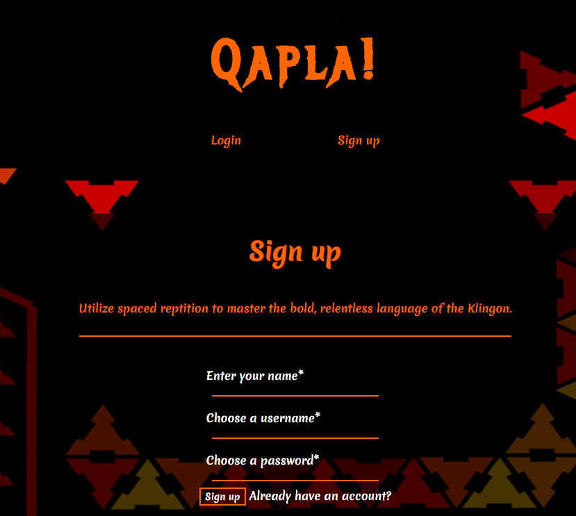
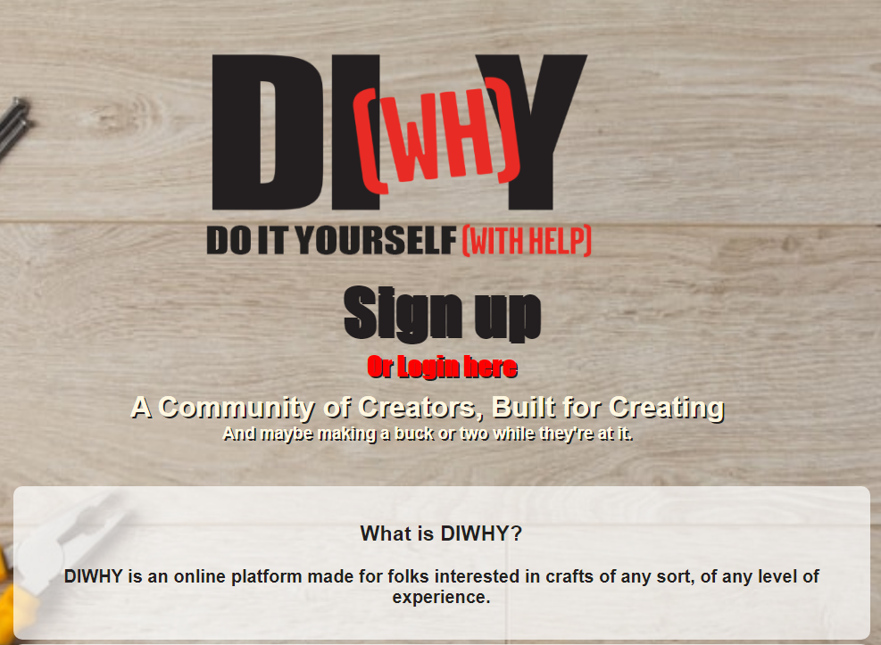

Agatha North

Hi! I'm Agatha North. I hope you're here to hire me! I'm a Front-end Web Developer by trade, and writing and tabletop roleplay enthusiast. You'll likely see my hobbies reflected in my projects, but don't let that fool you into thinking this isn't serious for me. I've always been a part of a team environment, and it's my sincerest wish to experience that here with a team of skilled programmers.
My skills include; JavaScript, CSS, HTML, React, Node, PostgreSQL, and a variety of smaller technologies that supplement web development. Please check out my projects and feel free to contact me about anything!
Projects
Rally!

GH Client Repo GH Server Repo
Find your party and start questing! Rally is here to help you forge lasting bonds with like-minded individuals looking for tabletop adventure! I build this project because I love tabletop roleplay, but know that getting lasting groups together is the ultimate pitfall of the hobby.
Skills: JavaScript, React, CSS, Node.js, PostgreSQL
Qapla!
GH Client Repo GH Server Repo
Qapla is a spaced-repetition language learning app for the fictional language of Klingon! Special thanks to the Klingon Language Institute! Visit them here kli.org
Skills: JavaScript, React, CSS, Node.js, PostgreSQL
DIWHY
GH Client Repo GH Server Repo
DIWHY as a concept is a social media and networking platform for both do-it-yourself enthusiasts and crafty professionals alike. It was built more as a challenge to try and grasp all of the complex data relationships that go into social media.
Skills: JavaScript, React, CSS, Node.js, PostgreSQL